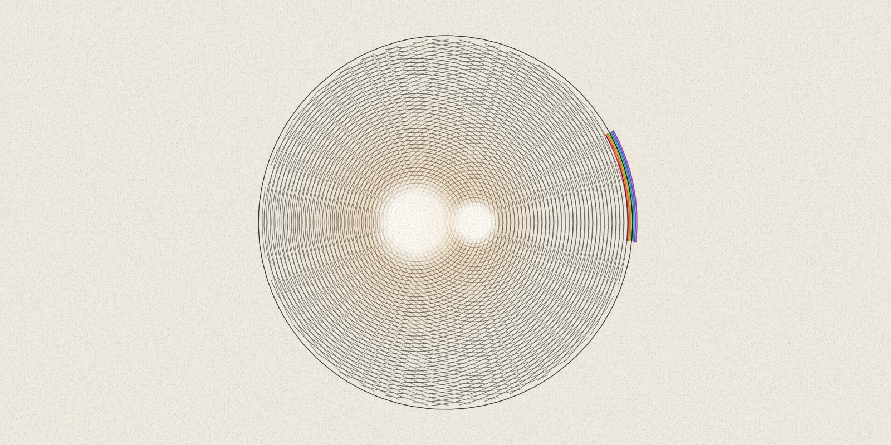
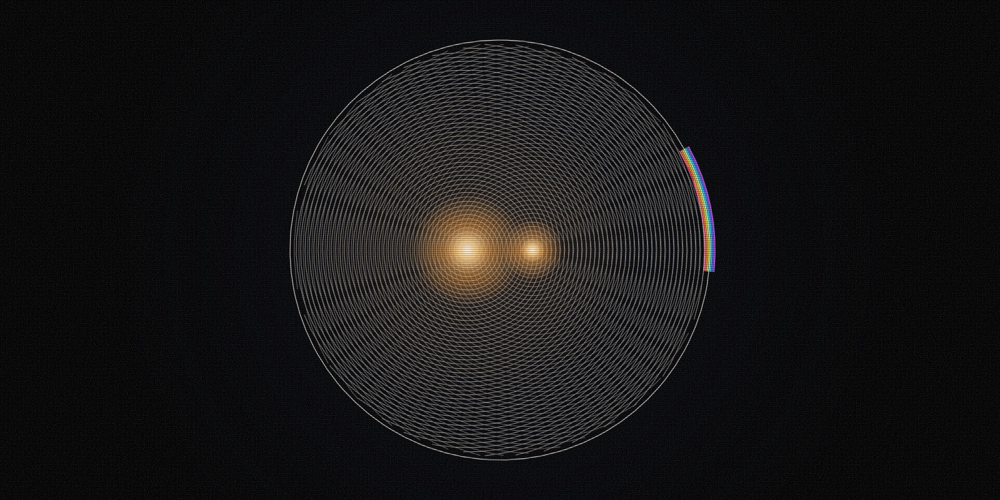

evidence essay · music listening
The Second Hearing
Hearing a piece of music again changes the listener's evidence, meaning what they have heard and noticed so far, even when the recording stays the same. This essay reads seven studies of exposure, familiarity and music perception. Liking, attention and memory can move on separate paths in those studies, and from that the essay argues that no single measure, a replay count included, can turn exposure into a verdict on taste or artistic value. After another play, ask what changed, which measure changed and what is still unknown.


In this article
Research summary and limits
Question. What does repeated listening change, and what can it never establish on its own?
Finding. Exposure can raise familiarity and sometimes liking, while attention, recognition, memory interference (a song getting in the way of another memory task) and perceived unpredictability follow different paths.
Evidence. Seven studies cover lab experiments that control how often people hear music, listening in everyday settings, brain recordings (EEG), memory tests, a pooled review of brain-scan studies, statistical models of how listeners perceive melodies and a test of which sounds people count as music. Read together, they show why those outcomes must stay separate.
Limit. The studies differ in listeners, sounds, schedules and units. Together they do not define a universal exposure curve, a single pattern of how liking changes with each extra play that holds for every listener. They also do not explain any one person's taste.
The second hearing is a new measurement
This essay treats each hearing as a measurement: the listener takes a new reading of the same music. A repeat changes the conditions of listening even when the sound file stays the same, because the listener carries a trace of the first hearing. On the second pass a rhythm may be easier to follow. A phrase can start to feel predictable, and an unfamiliar texture may now have a name.
That observation is a frame for the essay and makes no claim about neuroscience. The evidence becomes useful only once the outcome is named. Liking, recognition, perceived unpredictability, shared neural timing and memory interference are different measurements, and a change in one cannot stand in for a change in the others. Shared neural timing here means how closely the brain signals of different listeners move in step. Memory interference means how much a song gets in the way of a later memory task.
Four different forms of familiarity
This essay separates four forms of familiarity: piece familiarity, style familiarity, within-piece repetition and across-hearing repetition. With piece familiarity, the listener has heard this exact recording or composition before. Style familiarity is the set of expectations a listener has learned from related music, and it applies even when the piece is new. Within-piece repetition happens during one hearing, when a rhythm, phrase, chorus, timbre (the color of a sound) or form comes back. Across-hearing repetition is the next meeting with the same excerpt or piece.
These distinctions matter because a new piece can belong to a familiar style, and a piece heard many times can stay hard to predict. A 2017 naturalistic study, one built to resemble ordinary listening, found that familiarity with similar music strongly predicted liking, though participants did not know the chosen examples at the start. That is style familiarity at work without piece familiarity. A 2019 study used EEG, a recording of electrical activity at the scalp. It sorted excerpts into familiar and unfamiliar styles before it tested immediate repetition, and its result comes two sections later.
The path of liking depends on how people listen
In three controlled experiments published in 2004, the same number of plays had no single fixed meaning across listening conditions. The experiments varied the amount of exposure and the ecological character of the music, meaning how close it came to music heard in daily life. They also varied whether people listened with focus or only incidentally, while doing something else. Music heard more often was liked more when people heard it incidentally. With focused listening, liking for the most true-to-life music rose and later declined. For less true-to-life music that rise and fall was weaker or absent. Recognition generally rose more with focused listening than with incidental listening.
The 2017 study used a different schedule. Fifteen adults rated 40 examples they did not know at the start. They gave ratings after the 1st, 10th, 19th and 28th presentation, that is, after each of those plays, over about four weeks. Liking rose with more plays at all four complexity levels, as rated by experts. A standard statistical test gave the presentation effect as F(3,42)=12.35, p<0.00001. That p value means a rise this large would occur by chance less than once in 100,000 tries if plays made no difference. Omega-squared, an effect-size measure, was 0.197: the number of plays accounted for about a fifth of the variation in ratings. The presentation-by-complexity interaction was not significant, so the study found no reliable sign that complexity changed that rise.
Because the studies differ in listening mode, material, schedule and setting, neither result overrides the other. Read together, they show only that repeated exposure can change liking and that its path depends on the conditions of exposure.
Attention is not liking
In the 2019 study, 40 participants in two groups heard instrumental excerpts three times in a row. The researchers measured inter-subject EEG correlation: how closely the brain signals of different listeners rise and fall together. They proposed that engagement with music affects this correlation. It fell across repeats for familiar-style excerpts and held up better for unfamiliar-style ones. The pattern was tested in both groups, each with its own set of excerpts.
The strongest caveat is that the researchers did not check this EEG measure against listener behavior to confirm that it tracks musical engagement. So a falling correlation cannot be read as boredom, or a sustained one as quality. Attention may change while liking or recognition moves in another direction.
Memory can move without preference
A 2023 experiment played four new sung choruses to 44 participants, each chorus between one and four times. The next day each song played again while participants did a serial-recall task, which asks people to recall items in order, and they kept doing the task after the song ended. Earlier work had found that an earworm, a tune that gets stuck in the mind, takes up working memory when the music is sung, as a kind of inner singing. Working memory is the short-term store people use to hold items in mind. Worse recall can therefore be read as a sign that a song is still running in the mind. Greater exposure tended to increase interference with the task during and after some songs, and the effects varied by song. Ratings of familiarity and of the wish to sing along rose between the two sessions.
The experiment separates outcomes that everyday talk often treats as one. A song can grow more familiar, easier to hear again in the mind or more disruptive to another memory task without growing more enjoyable. Four songs and a modest sample cannot establish that repetition reliably creates an earworm.
The listener is part of the measurement
A 2024 study built statistical models of how listeners perceive melodies. It recruited 96 nonmusicians and analyzed their ratings of short Western-classical melodies. Two participants with missing age data were excluded. The analyses kept the observations that listeners rated unfamiliar, so the results describe melodies the listeners said they did not know. The researchers computed properties of each melody and asked how listeners perceived its balance, contour (how the melody's line moves up and down), symmetry, complexity and unpredictability. Those perceptions mediated several links between the computed properties and liking. In these models, mediated means the link passed through a middle step, here the listener's perception. Differences between participants and between melodies explained a substantial share of the variation.
The models show why a formal feature, a property of the notes themselves, cannot be treated as though every listener receives it in the same way. They were correlational: they track what moves together and cannot show that a perceptual judgment causes liking. Short synthesized piano excerpts cannot establish rules that hold across cultures either.
A 2018 review asked which brain areas respond most reliably to familiar music. It was a systematic review, which gathers every study that meets rules set in advance, and it found 23 eligible neuroimaging (brain-scan) studies of adults. Eleven of them, with 212 participants, entered its activation-likelihood meta-analysis. That method pools brain-imaging studies and looks for locations where reported activity peaks cluster. The main analysis found no brain location where reported peaks consistently converged. That null result means studies with mixed designs did not support one simple familiarity center; it does not show that familiarity lacks a neural basis.
A 2026 set of four preregistered experiments asked which sounds people identify as music. Preregistered means the researchers registered their plans before collecting data. In the reported models, across 735 online Western participants, higher-level perceptual judgments separated music, not-music and ambiguous sounds more clearly than low-level acoustic features, the measurable properties of the sound wave. The clearest judgments were recognizing a musical instrument, detecting a melody and inferring that a sound was made on purpose. The task tested how people sort sounds into categories. Because it did not test liking, it cannot serve as a result about preference under repeated listening.
What replay count cannot say
A replay count, the number of times a track was played, records behavior and a chance to learn. It does not reveal whether the listener paid attention, chose the play, finished the work, remembered it later or valued it. Recommendation systems, habit, context, access, social cues and deliberate study can all produce another play.
A count also cannot establish artistic quality, durable preference, intention or universal taste. Those claims go beyond what the measure can support. Honest use of replay data begins by naming its denominator and setting: what the count is out of and where it came from. That means saying whose plays were counted and over what period. It also means naming the recommendation and access conditions, along with the rule that counted a play as finished.
A four-note listening card
This listening card is an editorial exercise. It is not a tested intervention, meaning a method shown in a study to change how people listen. The card has four notes: record your first response; name one detail you can hear for the first time; note one prediction or surprise; name what still resists you. It aims to keep liking, recognition, attention and prediction apart, so they do not blur into one vague impression, and it is not meant to force appreciation.
The card may be most useful when it records a null, a result in which a measure shows no change. A null is a legitimate observation and needs no ranking. Nothing new may become audible, or liking may stay where it was. A detail may also grow clearer while the work remains unappealing.
The honest measurement
Another play changes the listener's evidence, what they have heard and noticed so far, and leaves the work's rank where it was. The second hearing may make structure easier to perceive, show where a prediction was wrong, strengthen a memory trace or leave the response unchanged.
A question more specific than whether the work was liked keeps both the evidence and the listener in view: what changed between hearings, which measure changed and what remains unknown?
Figure 1. What four studies measured
Each study measured a different outcome, in its own units and on its own schedule, so the results answer different questions.

What this cannot show. That more exposure has one meaning, that prediction determines pleasure or that a universal exposure curve exists
Read the data and method
| Study | Listeners and music | How often heard | What was measured | What was found | What it cannot show |
|---|---|---|---|---|---|
| S2 | 2017 liking study: 15 listeners; 40 examples | Plays 1, 10, 19 and 28 over about four weeks | Liking rating from 0 to 10 | Liking rose with more plays (omega-squared 0.197: plays accounted for about a fifth of the variation) | No universal exposure curve |
| S4 | 2019 brain-recording study: 40 participants in two groups; 8 or 12 excerpts | Three repeats in a row per excerpt | How closely listeners' brain signals moved together (EEG) | Brain-signal alignment fell for familiar-style music and persisted for unfamiliar-style music | No validated measure of boredom or value |
| S5 | 2023 earworm study: 44 participants; four sung choruses | One to four plays; test one day later | Recall of items in order, plus 0 to 100 ratings | More plays tended to increase interference with recall for some songs | No reliable earworm rule |
| S6 | 2024 melody-perception study: 96 recruited; two excluded; 96 excerpts | Two rating blocks; the number of plays was not varied | Five-point ratings, analyzed with statistical models | How listeners perceived a melody carried several links between its measured features and liking | No claim that more plays cause any effect |
- Does not prove
- That more exposure has one meaning, that prediction determines pleasure or that a universal exposure curve exists
- Scope
- Four studies published from 2017 through 2024 using adult listener samples
- Units
- Study-specific ratings, EEG correlation, serial recall and model estimates
- Denominator
- S2: 15 listeners; S4: 40 participants; S5: 44 participants; S6: 96 recruited with two excluded
- Date
- Sources checked 1 September 2026
- Transformation
- Each study's published schedule, direction of effect and statistics are restated as reported. Nothing is normalized, meaning rescaled onto a common scale, and no unpublished means are estimated
- Uncertainty
- Each row keeps its own design, population, unit and limitation
- Limitations
- This is not a meta-analysis, which would pool the studies. What each study measured, and the size of each effect, are not comparable across rows.
Sources
- Liking and memory for musical stimuli as a function of exposure. American Psychological Association via PubMed. peer-reviewed primary research; three controlled exposure experiments. Published 2004-03-01; observed 2026-09-01.
- Repeated Listening Increases the Liking for Music Regardless of Its Complexity. Frontiers in Neuroscience. peer-reviewed primary naturalistic repeated-listening experiment. Published 2017-03-31; observed 2026-09-01.
- Neural Correlates of Familiarity in Music Listening: A Systematic Review and a Neuroimaging Meta-Analysis. Frontiers in Neuroscience. peer-reviewed systematic review and activation-likelihood meta-analysis. Published 2018-10-05; observed 2026-09-01.
- Music synchronizes brainwaves across listeners with strong effects of repetition, familiarity and training. Scientific Reports. peer-reviewed primary EEG research. Published 2019-03-05; observed 2026-09-01.
- The song that never ends: The effect of repeated exposure on the development of an earworm. Quarterly Journal of Experimental Psychology. peer-reviewed primary memory-interference experiment. Published 2023-01-09; observed 2026-09-01.
- Perceptual representations mediate effects of stimulus properties on liking for music. Annals of the New York Academy of Sciences. peer-reviewed primary perceptual-modeling study. Published 2024-02-06; observed 2026-09-01.
- Music is a distinct perceptual category with subjective grounds. Scientific Reports. peer-reviewed preregistered primary categorization research. Published 2026-05-27; observed 2026-09-01.
Claim notes and limitations
Repeated exposure can raise liking, but the trajectory changes with attention, stimulus context and exposure schedule.
- Scope
- Controlled and naturalistic repeated-listening experiments using different musical materials
- Uncertainty
- The studies differ in listening mode, ecological validity, sample and schedule and were not pooled
- Does not prove
- A universal exposure curve that holds for everyone, whether a steady rise in liking with plays (monotonic) or a rise and then a fall (inverted-U)
Exact piece familiarity and pre-existing style familiarity are different predictors.
- Scope
- Initially unfamiliar examples and familiar-style versus unfamiliar-style instrumental excerpts
- Uncertainty
- Style classifications are group-level and culturally situated
- Does not prove
- That style familiarity causes liking for an individual listener
Attention-related EEG correlation can change across repeats without measuring liking.
- Scope
- Immediate repetitions of instrumental excerpts compared with separate liking and recognition experiments
- Uncertainty
- The EEG measure was not checked against listener behavior as a sign of musical engagement
- Does not prove
- That shared neural timing measures aesthetic value or private experience
Repetition can increase familiarity and later memory interference without establishing a matching increase in enjoyment.
Sources: S5
- Scope
- Forty-four participants and four novel vocal choruses tested across two days
- Uncertainty
- Effects varied by song, and the stimulus set was small
- Does not prove
- That every repeated song becomes an earworm
Perceived stimulus properties and listener-level variation matter when relating formal features to liking.
Sources: S6
- Scope
- Online ratings of short Western-classical synthesized melodies
- Uncertainty
- Correlational statistical models (structural-equation models) in a Western sample
- Does not prove
- That perception causes the links (causal mediation) or that the results hold across cultures
The main neuroimaging synthesis did not find one brain location where familiarity-related activity consistently converged across studies with mixed methods.
Sources: S3
- Scope
- Twenty-three reviewed adult neuroimaging studies, with eleven entering the main meta-analysis
- Uncertainty
- Brain-scan methods (modalities), stimuli, familiarity definitions and designs varied
- Does not prove
- That familiarity has no neural basis
Higher-level listener judgments explained music categorization better than low-level acoustic features in the reported models.
Sources: S7
- Scope
- Four preregistered experiments with 735 online Western participants
- Uncertainty
- The work studied categorization and did not test preference. It used short isolated excerpts
- Does not prove
- That categorization and pleasure are the same process
Replay count records exposure and an opportunity for learning, and it cannot show quality, durable preference or a listener's reason.
Sources: S1, S2, S3, S4, S5, S6, S7
- Scope
- Editorial synthesis across distinct exposure, attention, memory, perception and categorization measures
- Uncertainty
- No source directly tested every interpretation of replay behavior
- Does not prove
- Any ranking of works, genres or listeners
Corrections
No corrections recorded.